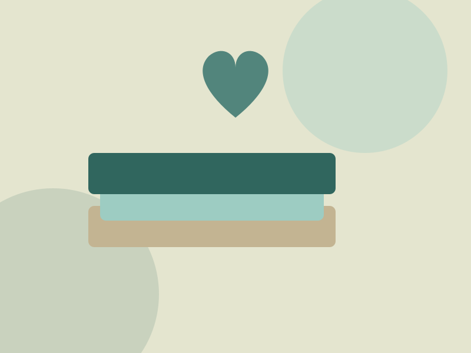
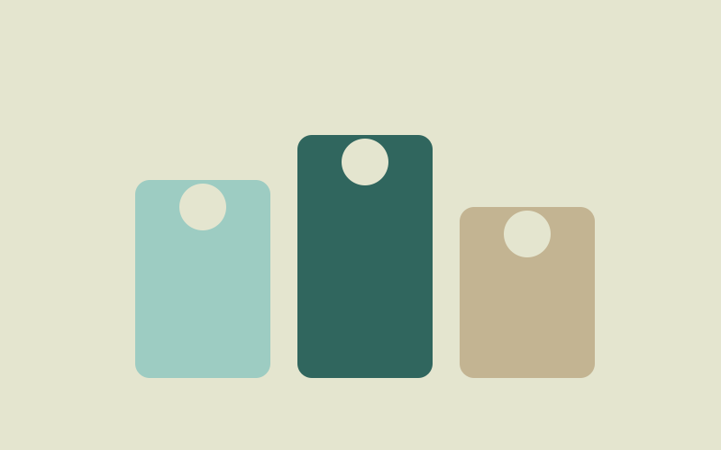

Every piece of clothing carries a little bit of dignity.
Clothes For All collects, sorts and shares good-quality pre-loved clothing with underprivileged communities across South Africa — because what you no longer wear can still change someone's day.

Welcome to Clothes For All
Founded in 2018 by a small group of community activists and social workers, Clothes For All has grown from a single volunteer-run collection point in Johannesburg into a network of Collection Centres across Cape Town, Durban and Gqeberha. Today, more than 50 volunteers collect, sort, clean and distribute clothing to families, matriculants and communities affected by poverty across Gauteng, the Eastern Cape and KwaZulu-Natal.
Read our full storyOur impact so far
Three ways to stand with us
Whether you have a bag of clothes in your cupboard, a Saturday morning to spare, or a business looking to give back — there is a place for you at Clothes For All.
Donate
Drop off clean, good-quality clothing at any of our Collection Centres, or contribute financially.
Volunteer
Join our team of collectors, sorters and distributors in your city.
Partner
Sponsor a drive or support us through your company's social responsibility programme.

See where your donations go
From matric dance outfits to school uniforms, our programmes are built around what each community actually needs. Explore our current programmes and the areas we distribute to.
View our work